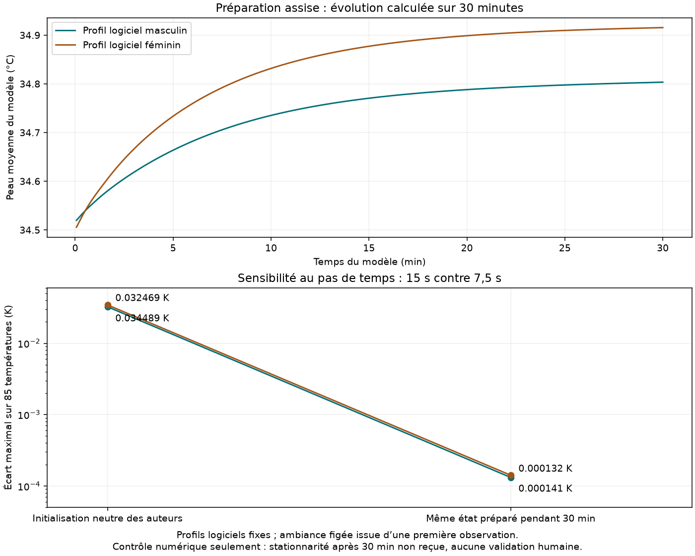
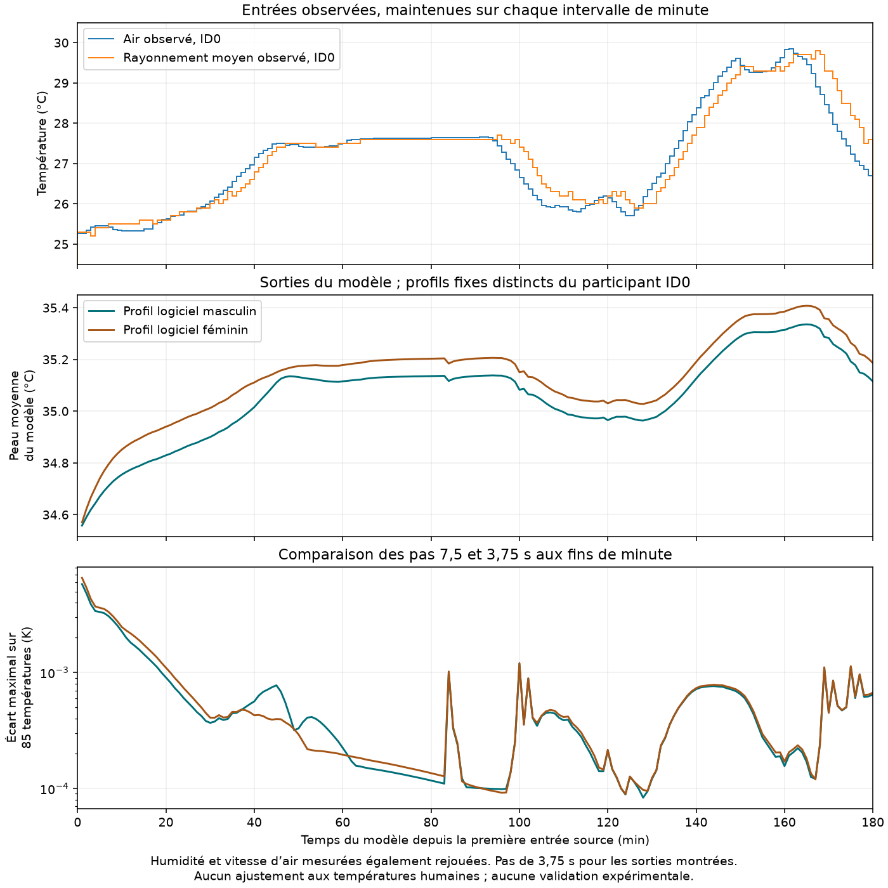

Observations du dépôt de Vellei et collaborateurs, version 3. Les quatre conditions cycliques de chaud et de froid restent séparées. Le dépôt contient 72 IDs d’enregistrement. La publication décrit 64 adultes (29 hommes, 35 femmes), dont huit participent aux deux saisons ; le rapprochement entre leurs IDs n’est pas fourni.
Vérification des sources…
Points : observations présentes à temps non ambigu. Les lignes relient seulement des points consécutifs espacés de 60 secondes. Les valeurs absentes et les temps dupliqués interrompent le tracé ; aucune interpolation ni moyenne des doublons.
Le dépôt fournit huit sites cutanés, un environnement horodaté et des renseignements de protocole. Les fichiers importés conservent 72 IDs sources, 13 036 lignes cutanées et leurs 20 103 cellules absentes. Quatre couples ID–temps ont deux lignes différentes : les huit lignes sont préservées et marquées ambiguës.
Ces observations ne valident pas encore le scénario debout T4. Le protocole publié est assis, avec une activité estimée à 1 met et 0,6 clo comprenant la chaise ; il ne reproduit pas les conditions du scénario debout nu T4. L’origine affichée est la première observation de peau, pas un début d’exposition certifié. Le côté des sites, le rapprochement entre sites mesurés et compartiments JOS-3, l’initialisation et la compatibilité des conditions restent à qualifier. La colonne Activity du fichier ne devient pas automatiquement le PAR du modèle. Aucun score n’est calculé.
La méthode annoncée dans le document du dépôt est conservée par salle : infrarouge pour EUREKA_1/FACADE_1, thermocouples T pour EUREKA_2/FACADE_2 selon le document du dépôt. Cette attribution instrumentale n’est pas tenue pour confirmée : certains profils de sites disponibles semblent discordants avec les cinq sites infrarouges décrits dans la publication. Aucune attribution n’est inversée automatiquement. Les deux méthodes ne sont pas fusionnées en une population homogène. Les températures sont déjà traitées par les auteurs : sélection du maximum par minute pour l’infrarouge et lissage gaussien décrit dans la publication. Aucune température centrale ou moyenne cutanée pondérée n’est inventée.
Deux profils logiciels ont été testés séparément des personnes enregistrées. À opérateur figé, l’intégration implicite se rapproche d’une référence vérifiée par deux méthodes. Après une préparation assise de 30 minutes, l’écart entre pas de 15 et 7,5 secondes devient inférieur à 0,000142 K sur les 85 températures dans ces essais.
La stationnarité après 30 minutes n’est pas reçue. Une moindre sensibilité numérique ne suffit pas à établir un équilibre physiologique ou la justesse du modèle face à ces observations. L’état initial, les sites et l’instrumentation restent à qualifier. L’écart de répartition métabolique relevé dans le code source est conservé.

Exporter les contrôles et leurs limites
La table 1 de l’article indique les unités anthropométriques. Les 24 moyennes âge/taille/masse des huit groupes du dépôt concordent avec cette table à sa précision publiée. Pour l’ID0 : 43 ans, homme, taille 178 cm convertie en 1,78 m, masse 69 kg. Ces valeurs ont été utilisées dans deux essais numériques supplémentaires, sans ajustement aux températures observées.
Le site mesuré chest et le compartiment JOS3:Chest:skin portent une température en °C, mais le premier est local et traité par les auteurs, le second représente une région du modèle. Leur correspondance reste un proxy candidat : ni recalage spatial ni équivalence du créneau de mesure n’est reçu. L’initialisation n’est pas mesurée ; la masse grasse et l’indice cardiaque restent des valeurs par défaut du modèle.
Aucun score de validation n’est autorisé par ce dossier. Les observations et les états calculés sont exportés séparément, avec leur statut et leurs identités.
Exporter le dossier thoracique et ses inconnues
Ce dossier utilise l’environnement de l’ID0, fixé avant tout calcul de score. Air, rayonnement moyen, humidité et vitesse d’air sont repris à chaque minute, puis maintenus jusqu’à la minute suivante. Les deux profils sont des références logicielles de 30 ans, 1,70 m et 60 kg, sans ajustement aux températures du participant.
Les trente premières minutes de l’enregistrement sont incluses dans le rejeu ; aucune préparation supplémentaire n’est ajoutée. Les sorties ne sont pas superposées aux mesures cutanées comme si les sites et les profils étaient déjà équivalents. Les écarts numériques sont comparés aux fins de minute ; aucun score expérimental n’est calculé.

Dynamic thermal perception and skin temperature data under whole-body cyclical conditions · v3, licence CC BY 4.0. Publication associée. Les six originaux ont été contrôlés par leur MD5 publié et conservés ; les lectures locales sont épinglées par SHA-256. Il s’agit des observations déposées, pas d’une reconstruction des signaux instrumentaux bruts.